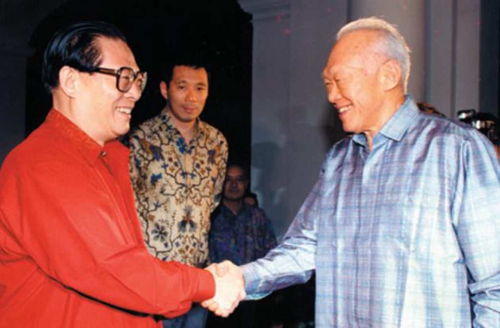
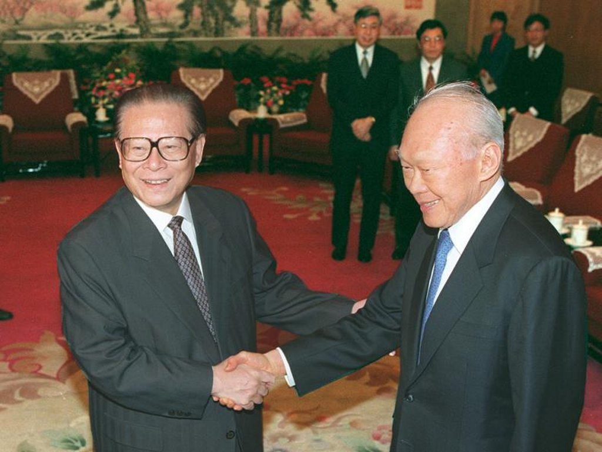
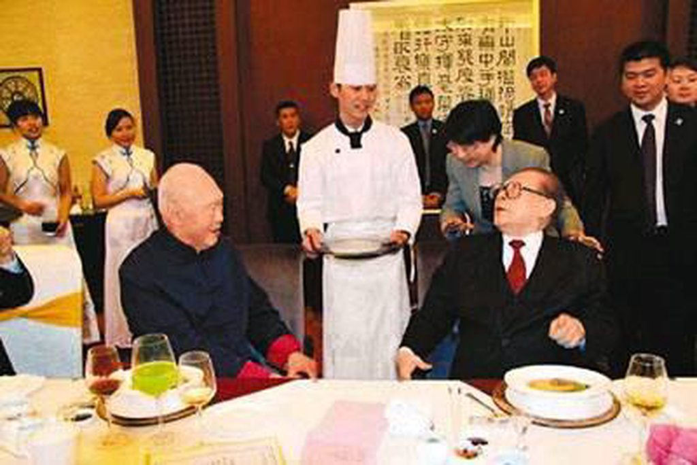
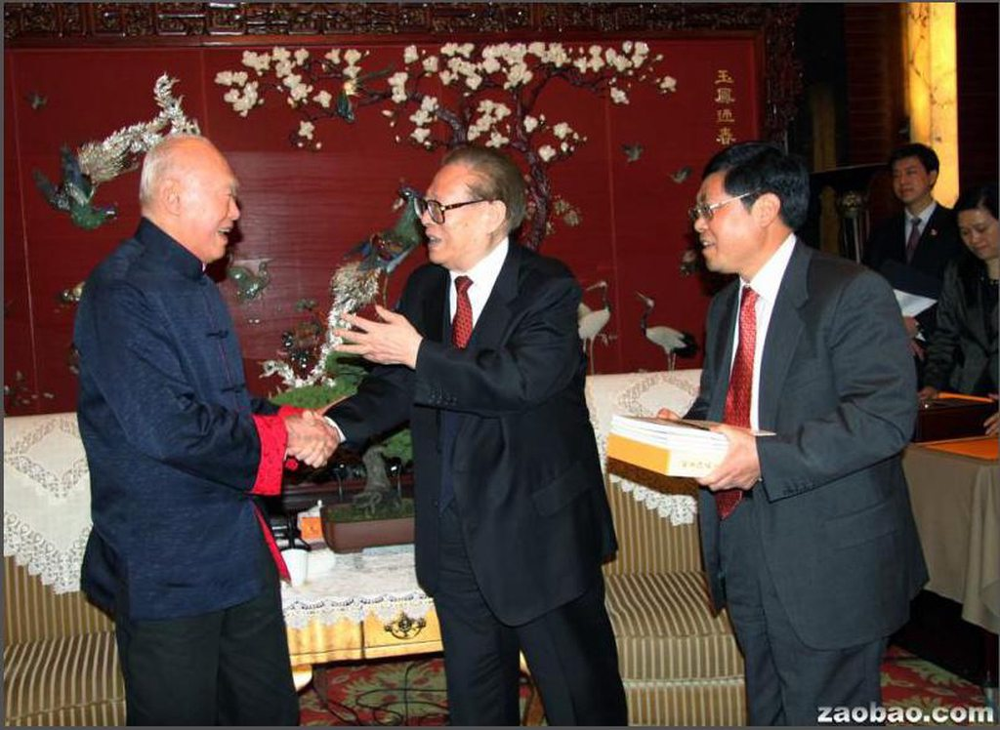

李光耀大长者三岁，相仿的年纪，相似的成长环境和教育背景，使得李在与官方五代中国领导人的交往中，独与江最要好。友谊的深度，是两个人的自身深度的表现，李在回忆录里说起这位中国老友说「我们两人很合得来。江爱结交朋友，我则直接坦率。同李鹏在一起，我必须小心地连半开玩笑也有所顾忌。 」

初次见面
为了这次初见，两人在几年前就连呼吸都反复练习了。80年2月，曾任一机部外事局局长的江被擢升为国家进出口管理委员会副主任，当时江年富力强又懂技术、懂外语、懂外事，深得顶头上司谷开来父亲的赏识。是年秋天，管委会受联合国资助组织了一个考察团考察12个国家的主要进出口中心和自由贸易区。江被任命为代表团团长，考察地点之一便是新加坡。
众所周知的原因，在新加坡，官方对代表团的接待并不怎么友好，当年的代表团成员回忆说「在向坚持说英语的新加坡官员抱怨时，江发现翻译有点儿跟不上，于是江亲自承担了全部的翻译工作。身为代表团团长，这是极不寻常的。江对这些新加坡华人官员不说中文感到不太高兴，所以在下午的会上他坚持要求他们说中文。结果讨论才变得较有收获。」
一线各表，对于这段江在新加坡考察的时期，李在回忆录中写到「江于1980年曾在新加坡待了两个星期，一名署长吴博韬担任他的联络员。江当上总书记之后，吴为我写了一份简略的江泽民印象记。在他印象中，江是个认真勤奋、明察秋毫的官员，会仔细研究每个问题，做笔记，凡事追根究底。吴很欣赏他，因为他不像其他中国官员那样住在五星级酒店，而是选择了繁华的乌节路以外的一家三星级酒店。他乘坐吴的普通车子，甚至搭的士或者步行。江是个节俭清廉的官员，但是看起来不像是个擅长搞政治的人物。 」
李和长者初见是哪一天有待考证，李曾在1985年9月13日飞抵上海，两个月前的7月28日，上海市八届人大四次会议刚刚补选江为上海市市长，但查阅当年9月的报纸，只提到了上海市副市长朱宗葆等到机场迎接并主持欢迎宴会和讲话，没有提到江，李在回忆录写到了这次宴会「作为拥有1200万人口的上海市长，江发现每天要提供200万公斤的蔬菜也很困难。一谈起中国的庞大需求，他就谈了一个小时。晚宴上的谈话非常生动。他不断从广博的记忆中引用童年时代就背诵过的诗词文赋。他的评语充满了文学比喻，很多都超越了我对中华文学有限的认识。这自然也加重了通译员的工作」
回忆录里同样记述下了李对江的第一印象「我没有如事前所料一般地，见到一个典型老练的共产党官员。在我面前的是个身高中等，身材圆胖，皮肤白皙，戴一副眼镜的阔脸，黑发往后直梳，经常面带笑容的主席。他资质极高，博览群书，而且有语言天分，俄语说得流利，也能说英语和德语，并且能够引述莎士比亚和歌德的话。他告诉我因为曾经在罗马尼亚工作，所以也能说罗马尼亚语」
李曾劝江研究美国联邦储备局和德国中央银行的运作方式。江对此做了记录并说，他是电机工程师出身，不过也开始学点经济，阅读亚当·史密斯、保罗·塞缪尔森和米尔顿·弗里德曼的著作。
“江喜欢抓着我的前臂”
李提到江有一个非常不像中国人的习惯，就是喜欢拉客人的前臂，殷切地看对方的眼睛问一个直接的问题。他指江泽民的眼睛是他探测谎言的仪器。在《我一生的挑战——新加坡双语之路》一书中李光耀回忆，「在中国领导人对美国及西方世界的认知还不足时，江会邀请他出席晚宴，与他讨论外界的情况。他会抓住我的手问我，跟我说西方对我们的真实看法！」

肢体语言表明了一种新建立的友谊。库恩在为江写的传记中也曾提到，江一度抓住布什的胳膊肘，而当时布什正在江的耳旁窃窃私语。与此相应的是，当两人转身准备去赴午宴时，布什很随意地把手臂搭在江的身上。
李曾与多名中国领导人打交道，但江李二人的交往非比寻常「我无法同华国锋和李鹏畅谈，像跟江泽民那样。」他们确实无话不谈，联合早报曾引用李光耀的话说，「江很乐于从党的总书记和国家主席的职位上退下来。」如果关系不铁的话，在换届前的敏感时期，他绝对不会公开说这番话。02年9月一期《联合早报》头版报道李在访问中国期间，和江谈到共产主义，说「他们是一个时代的产物，这个属于共产主义的时代快要结束了。」 这与江退休后自问自答共产主义是否会实现时说的那句「我看未必」一脉相承。
两人的亲密关系还体现在交流的语言上，李在回忆录里提到94年5月在北京人民大会堂与江讨论国是，江说「我有翻译员，但是我们别浪费时间，你就说英语好了，我听得懂。而我说华语，你也能听懂。有什么不明白的，我的翻译员可以帮忙。」两人当天的确省下不少时间，那场讨论非常热烈。
但在具体政策上实用主义者的李对长者也会不吝批评，维基解密2010年11月30日发表的美国外交部泄密文档里，其中一份丛美国驻新加坡使馆传出来的秘密文件，记录了美国副国务卿斯坦伯格（James B STEINBERG）2009年5月30日与新加坡前总理李光耀见面时的谈话内容。台湾问题上，李光耀在比较胡和江时指出，江的思想被所谓的「江八点」制约了，以至在处理台湾问题时缺乏灵活性。他总希望在自己有生之年把台湾问题解决，以为这样就可以名垂千古。
烟花三月下扬州
2010年春天，莺飞草长，长者抖擞精神在江南散心近20天，在结束在无锡、常州、南京的游览后回到家乡扬州并参访母校扬州中学。这时，他想起了老友李光耀，安排了一场特殊的外事活动。
据李光耀女儿在《海峡时报》中记述，李光耀本来准备直飞上海并于5月14日参观上海世博会，但在离开新加坡前一晚，在江的邀请下，李光耀决定先到扬州探望这位老友，于是他们直飞南京，再转汽车到达扬州。「我了解我的父亲。为了表现他不曾遗忘退休的老朋友，他乐意踏上这让人疲惫的旅程。这是独特且值得的一趟旅程。」李的女儿说道。

长者在李面前表现出对家乡的偏爱不仅是对扬州，原大内斗省省委书记陈焕友在新华日报回忆起当年苏州工业园区选址问题时，写到「江不久在北京会见李光耀时说：关于中新合作项目放在哪里，我作为中央领导人不便明确讲，因为手心手背都是肉。但如果你征求我的意见，作为个人看法，我认为放在江苏苏州好。因为那里的劳动力素质比较高，中国历史上的状元、举人出在那里的比较多，而且苏州靠上海近，交通方便。 」而如今苏州园区风姿绰约，富可敌省，苏北狗义帮苏南人的场景此后多年不遇。
说回扬州之行，这是他们四年来首次重逢，长者与夫人以红地毯迎接李光耀，安排特色晚餐，品尝扬州干丝等美食。长者特意安排夫人坐在李玮玲身边，使「父女俩倍感老友之盛情」。晚餐后，长者还陪同李光耀坐船欣赏瘦西湖夜色，古筝伴奏，「让城墙在灯光月夜的交替下更显古味浓情。」
餐叙期间，长者还向老友赠送了一套书（如下图），《日出江花——青年江泽民在上海》，这是记述江青年时代在上海工作经历的书，据信，江对此书的编纂提供了不少线索。

五年后依然是春天，树枝细着，风中摇摇，而那时的他们却不见了。奈何寿长，长者有着本杰明巴顿式的绝望，他眼睁睁地看着那些当年在国际舞台上共舞的老友叶利钦、金正日、曼德拉等这几年纷纷离世，而他依然年轻着。《温莎墓园》里谈离别，走的那个因为忙于应付新遭遇，接纳新印象，不及我想，而送别的那个，仍在原地，明显感到少一个人了，所以处处触发冷寂的酸楚。于时间的长廊里逆生命之流生长的长者成为了孤独的伫立者，虽不能偕老，但却会一起陪我们走到最后。